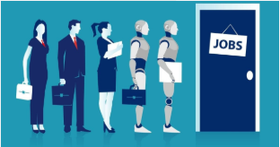
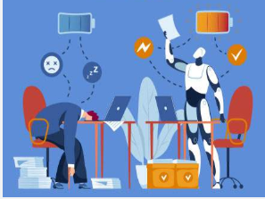

AI can have a great impact on some jobs and by around 2030, 300 million jobs globally could be affected. Nowadays long and time consuming tasks are usually taken by AI because of its efficiency.
AI has had some major breakthroughs over the last 3 years having the creation of generative AI and lots of new AI being released. Before AI couldn’t really do heavy weight jobs/tasks but now it is constantly developing, doing jobs that were impossible 10 years ago.

AI has started to make its way into jobs applications for being able to perform tasks fast and precisely.

AI’s productivity is a lot higher than humans, so they out perform on speed and energy.
In spite of its strengths, over recent years, many adults have suffered because of AI. They can vary from young adults to 50 year olds. This has put some citizens to either lose their job or get demoted because of it. These people don't like AI because of what it did to them. But AI can also be used as a tool for some jobs, because it opens up new fields in the work department and it also can make some jobs easier because of AI tools. AI tools are systems that excel in an area that can be used to help you out. People who mainly technology a lot in their jobs, like AI, because it helps them with their job and makes it easier.
This issue started back in late 2022 or 30 November 2022 to be exact, this is when ChatGPT was released, or generative AI was released. Generative AI is advanced AI that can generate text, images, or sounds, it can also learn over time on the habits of the user and the types of stuff they research/get it to do (data analysis, writing, coding, or research). Generative AI is what caused it to have some roles in today's work load, but unlike us AI is unable to do physical jobs but instead does more research and finance jobs.
The reason why AI is being used in the modern day so much for tasks instead of people doing it themselves is because unlike us researching it is because of AI’s efficiency and that tasks can now be automated making it less time consuming for longer tasks. Unlike other things AI is accessible to anyone that makes it so popular because you don't need to pay a subscription or fee, but most AI’s now have a subscription to get a faster AI and have more automation capabilities.
As of 2023 AI took over tasks that should have gone to junior developers, this can affect the progression of these developers. While for junior developers AI can also be a blessing, used for learning things faster or to teach them new things as a developer. Lots of jobs are affected by AI, because it can be used to do:
In the near future AI could be used in robots so that they become something on earth other than lines of code in an app. This could definitely have a huge impact on jobs because in the present day AI hasn’t really had any roles that are physical (other than robot tests), so if this happened lots of jobs could potentially go away.